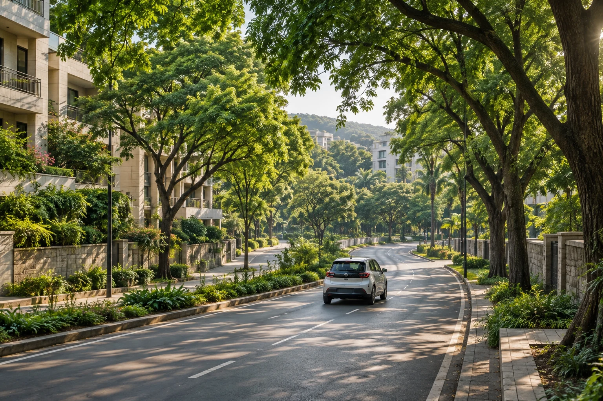

A ride that fits your day
Choose your pickup and destination. Find a shared journey priced per seat, or a private car or bike with a whole-vehicle fare.
Make your daily Pune commute part of something better. Find a shared journey, choose a car or bike, and help build a future with more shade and fewer solo trips.
Preparing our Pune pilot · Android & iPhone in development

The office journey repeats every day. Planto-Ride starts with people travelling between Pune neighbourhoods and employment hubs, connecting journeys heading the same way.
Choose your pickup and destination. Find a shared journey priced per seat, or a private car or bike with a whole-vehicle fare.
Review the departure and price before booking. Already driving? Offer your spare seats.
Our commitment: allocate 50% of annual net profit after tax to planting and long-term care of city trees.
Our proposed pilot focuses on office commute corridors where people make similar journeys each week. These are planned areas, not a claim of operating coverage.
Neighbourhoods and the IT park commute.
Everyday journeys through west Pune.
Connections around eastern employment hubs.
Shared journeys around office communities.
Availability depends on the connected booking service and published offers from approved drivers. The current app matches exact pickup and destination areas.
Choose shared rides, cars or bikes. Request a Ladies journey, verify the trip PIN, share your journey and keep emergency help within reach.
Real availability depends on approved drivers and the connected booking service.
Sharing a ride can mean fewer vehicles making the same journey. Our vision goes further: help bring shade, greenery, and healthier public spaces back to the city.
Planting is just the beginning. Our pledge includes irrigation and ongoing care, because a greener city needs trees that thrive.
We plan to follow each planting project through care and survival, and publish the records behind the work.
This is the intended programme. Public results will be reported only when supported by operating and planting records.
We plan to work with employers to bring compatible commuters together, build trust within workplace communities, and make shared journeys easier to repeat.
Explore Planto-Ride ↗Shared, Car and Bike options, trip PINs, Ladies eligibility, journey sharing and SOS access. Public bookings await backend activation and approved driver offers.
Employer partnerships, workplace verification, recurring schedules and route-overlap matching are proposed improvements, not current features.
Green Fund allocations, planting records, irrigation and survival reporting, without invented impact counters.
“Protecting our Mother Earth is our responsibility. Let’s cherish and preserve her beauty together.”
I’m Navnath Sonawane, an IT Engineer from Pune. Planto-Ride began with a simple belief: the journeys we already make can become part of a better future for our city.
The app shows only real offers from approved drivers. Bookings become available when the backend service is connected and verified drivers publish journeys. If the service is not connected, no bookings or payments are accepted.
The commitment is 50% of annual net profit after tax, after business expenses. It is not 50% of a fare or revenue. Allocation, accounting, planting partners and reporting will be established before launch.
The mobile app is being developed for both platforms using a shared native codebase. Store releases and public downloads are not available yet.
Our plan is to report allocations, planting locations, irrigation work, and tree survival. These reports will need supporting records from operating and planting partners.